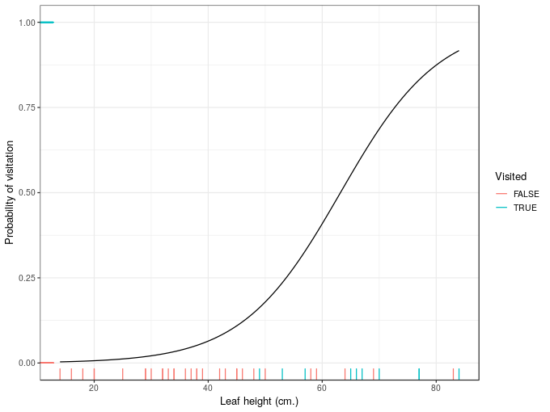
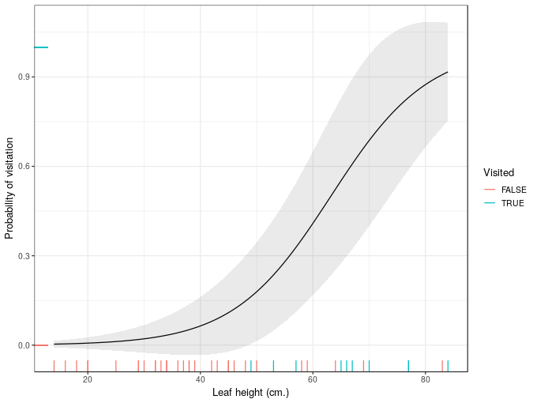
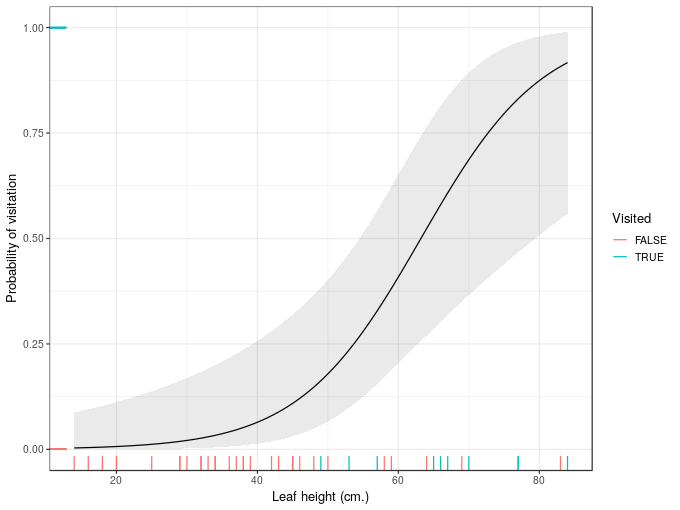

Confidence intervals for GLMs
Posted in
Tagged
You’ve estimated a GLM or a related model (GLMM, GAM, etc.) for your latest paper and, like a good researcher, you want to visualise the model and show the uncertainty in it. In general this is done using confidence intervals with typically 95% converage. If you remember a little bit of theory from your stats classes, you may recall that such an interval can be produced by adding to and subtracting from the fitted values 2 times their standard error. Unfortunately this only really works like this for a linear model. If I had a dollar (even a Canadian one) for every time I’ve seen someone present graphs of estimated abundance of some species where the confidence interval includes negative abundances, I’d be rich! Here, following the rule of “if I’m asked more than once I should write a blog post about it!” I’m going to show a simple way to correctly compute a confidence interval for a GLM or a related model.
Why is plus/minus two standard errors wrong?
Well, it’s not! However, the main reason why people mess up computing confidence intervals for a GLM is that they do all the calculations on the response scale. This results in symmetric intervals on this scale and the very real possibility that the intervals will include values that are nonsensical, like negative abundances and concentrations, or probabilities that are outside the limits of 0 and 1.
Think about a Poisson GLM fitted to some species abundance data. In this model there is an implied mean-variance relationship; as the mean count increases so does the variance. In fact, in the Poisson GLM, the mean and variance are the same thing. The implication of this is that as the mean tends to zero, so must the variance. If we had an expected count of zero the variance would also be zero, and our uncertainty about this value would also be zero. However, our model won’t ever return expected (fitted) values that are exactly equal to zero; it might yield values that are very close to zero, but never exactly zero. In that case we do have some uncertainty about this fitted value; the uncertainty on the lower end has to logically fit somewhere between the small estimated value and zero, but not exactly zero as we’re not creating an interval with 100% coverage.
We might also logically expect greater uncertainty above the fitted value, for our upper limit on the confidence interval; we’re saying that the true expected abudance is possibly somewhat larger than the fitted value and due to the mean-variance relationship, a larger fitted value is a larger mean value, which implies a larger variance, and consequently a larger amount of uncertainty above the fitted value than below.
Similar arguments can be made for models where there are both upper and lower limits to the response, such as binomial models where the response is a probability bounded between 0 and 1. As the fitted value approaches either boundary the uncertainty about the fitted value in the direction of the boundary gets squished up and the asymmetry of the confidence interval increases.
To illustrate, I’ll use a simple data set on wasp visits to leaves of the Cobra Lily, Darlingtonia californica. The data are on my blog and I’ve created a short link using bitly.com. If you want to follow along, load the data and some packages as shown
## packages
library('readr')
library('tibble')
library('dplyr')
library('ggplot2')
theme_set(theme_bw())
wasp <- read_csv('http://bit.ly/cobralily', skip = 1)
wasp <- mutate(wasp, lvisited = as.logical(visited))The experiment used timed census of visitations by wasps to leaves of the Cobra Lily. These data come from Gotelli & Ellison’s text book A Primer of Ecologisal Satistics. Whether or not a wasp visited a leaf during the census was recorded along with the height of the leaf from the ground. The aim is to test the hypothesis that the probability of leaf visitation increases with leaf height.
Let’s jump right in and fit the GLM, a logistic regression model
mod <- glm(lvisited ~ leafHeight, data = wasp, family = binomial())
summary(mod)
Call:
glm(formula = lvisited ~ leafHeight, family = binomial(), data = wasp)
Deviance Residuals:
Min 1Q Median 3Q Max
-2.18274 -0.46820 -0.23897 -0.08519 1.90573
Coefficients:
Estimate Std. Error z value Pr(>|z|)
(Intercept) -7.29295 2.16081 -3.375 0.000738 ***
leafHeight 0.11540 0.03655 3.158 0.001591 **
---
Signif. codes: 0 '***' 0.001 '**' 0.01 '*' 0.05 '.' 0.1 ' ' 1
(Dispersion parameter for binomial family taken to be 1)
Null deviance: 46.105 on 41 degrees of freedom
Residual deviance: 26.963 on 40 degrees of freedom
AIC: 30.963
Number of Fisher Scoring iterations: 6
Now create a basic plot of the data and estimated model
## some data to predict at: 100 values over the range of leafHeight
ndata <- with(wasp, data_frame(leafHeight = seq(min(leafHeight), max(leafHeight),
length = 100)))
## add the fitted values by predicting from the model for the new data
ndata <- add_column(ndata, fit = predict(mod, newdata = ndata, type = 'response'))
## plot it
plt <- ggplot(ndata, aes(x = leafHeight, y = fit)) +
geom_line() +
geom_rug(aes(y = visited, colour = lvisited), data = wasp) +
scale_colour_discrete(name = 'Visited') +
labs(x = 'Leaf height (cm.)', y = 'Probability of visitation')
plt
Next, to illustrate the issue, I’ll create the confidence interval the wrong way
## add standard errors
ndata <- add_column(ndata, wrong_se = predict(mod, newdata = ndata, type = 'response',
se.fit = TRUE)$se.fit)
## compute a 95% interval the wrong way
ndata <- mutate(ndata, wrong_upr = fit + (2 * wrong_se), wrong_lwr = fit - (2 * wrong_se))and plot the resulting interval
plt + geom_ribbon(data = ndata, aes(ymin = wrong_lwr, ymax = wrong_upr),
alpha = 0.1)
That’s problematic because for significant sections of leafHeight our uncertainty interval breaks the laws of probability.
So, when creating confidence intervals we should expect asymmetric confidence intervals that respect the physical limits of the values that the response variable can take. If they don’t, then you’ve probably computed them the wrong way.
The previous paragraphs walked through a logical reason why confidence intervals are not symmetric on the response scale. The theory behind adding/subtracting two times the standard error is also derived for models where the response is conditionally Gaussian. It doesn’t really work properly at all when the response is not conditionally distributed Gaussian; you only need to realise that a confidence interval that includes impossible values can’t possibly have the coverage properties claimed because some part of it lies in a space of values that just won’t ever be observed.
Confidence intervals the right way
How do we create correct confidence intervals?
A simple solution is to create the interval on the scale of the link function and not the response scale. On the link scale, we’re essentially treating the model as a fancy linear one anyway; we asssume that things are approximately Gaussian here, at least with very large sample sizes. Given that assumption, we can create a confidence interval as the fitted value plus or minuss two times the standard error on the link scale, and the use the inverse of the link function to map the fitted values and the upper and lower limits of the interval back on to the response scale.
If you paid attention in your stats classes, you might know that the default link for the Poisson GLM is the logarithm link. You might also know that the inverse of taking logs is exponentiation. You may even know that exponentiation is done in R using the exp() function. But what’s the inverse of the logit function, which was the link used in our model for leaf visitation? Even if you knew what the correct mathematical function was, would you know what R function to use for this? And I defy most readers to know what the inverse of the complementary-log-log link function is, which we could have used instead of the logit link in our model. This problem only gets worse when we start thinking about models that walk and quack like a GLM but aren’t really GLMs in the strict sense, but which use families that are outside the usual suspects of the exponential family of distributions.
All is not lost however as there is a little trick that you can use to always get the correct inverse of the link function used in a model. (Well, always is a bit strong; the model needs to follow standard R conventions and accept a family argument and return the family inside the fitted model object.)
Typically in R, functions that fit generalized models take a family argument and return a family object that we can extract from the model itself. That family object contains all the information we need to create proper confidence intervals for GLMs and related models.
For the logistic regression model we fitted earlier, the family object is the same as that returned by binomial(link = 'logit'), and we can extract it directly from the model using the extractor function family()
fam <- family(mod)
fam
str(fam)
Family: binomial
Link function: logit
List of 12
$ family : chr "binomial"
$ link : chr "logit"
$ linkfun :function (mu)
$ linkinv :function (eta)
$ variance :function (mu)
$ dev.resids:function (y, mu, wt)
$ aic :function (y, n, mu, wt, dev)
$ mu.eta :function (eta)
$ initialize: expression({ if (NCOL(y) == 1) { if (is.factor(y)) y <- y != levels(y)[1L] n <- rep.int(1, nobs) y[weights =| __truncated__
$ validmu :function (mu)
$ valideta :function (eta)
$ simulate :function (object, nsim)
- attr(*, "class")= chr "family"
If you look closely you’ll see a component named linkinv which is indicated to be a function. This is the inverse of the link function. The link function itself is in the linkfun component of the family. If we extract this function and look at it
ilink <- fam$linkinv
ilink
function (eta)
.Call(C_logit_linkinv, eta)
<environment: namespace:stats>
we see something very simple involving an argument named eta, which stands for the linear predictor and means we need to provide values on the link scale as they would be computed directly from the linear predictor, \(\eta\) (this is the Greek letter eta). In this instance the function calls out to compiled C code to compute the neccessary values, but others are easier to understand and use simple R code, e.g. for the log link in the poisson() family we have
poisson()$linkinv
function (eta)
pmax(exp(eta), .Machine$double.eps)
<environment: namespace:stats>
This shows that we exponentiate eta (which we know is the correct inverse function), and this is wrapped in pmax() to insure that the function doesn’t return values smaller than .Machine$double.eps, the smallest (positive floating point) value \(x\) such that \(1 + x \neq 1\).
Now that we have a (generally) reliable way of getting the link function used when fitting a model, we can adapt thestrategy we used earlier so that we get the right (approximately) confidence interval. For this we need to
- generate fitted values and standard errors on the link scale, using
predict(...., type = 'link'), which happens to be the default in general, and - compute the confidence interval using these fitted values and standard errors, and then backtransform them to the response scale using the inverse of the link function we extracted from the model.
For the wasp visitation logistic regression model then, we can do this using the following bit of code
## grad the inverse link function
ilink <- family(mod)$linkinv
## add fit and se.fit on the **link** scale
ndata <- bind_cols(ndata, setNames(as_tibble(predict(mod, ndata, se.fit = TRUE)[1:2]),
c('fit_link','se_link')))
## create the interval and backtransform
ndata <- mutate(ndata,
fit_resp = ilink(fit_link),
right_upr = ilink(fit_link + (2 * se_link)),
right_lwr = ilink(fit_link - (2 * se_link)))
## show
ndata
# A tibble: 100 x 10
leafHeight fit wrong_se wrong_upr wrong_lwr fit_link se_link
<dbl> <dbl> <dbl> <dbl> <dbl> <dbl> <dbl>
1 14 0.00341 0.00567 0.0147 -0.00792 -5.68 1.67
2 14.7 0.00370 0.00605 0.0158 -0.00840 -5.60 1.64
3 15.4 0.00401 0.00646 0.0169 -0.00891 -5.51 1.62
4 16.1 0.00435 0.00690 0.0182 -0.00945 -5.43 1.59
5 16.8 0.00472 0.00737 0.0195 -0.0100 -5.35 1.57
6 17.5 0.00512 0.00786 0.0208 -0.0106 -5.27 1.54
7 18.2 0.00555 0.00839 0.0223 -0.0112 -5.19 1.52
8 18.9 0.00602 0.00895 0.0239 -0.0119 -5.11 1.49
9 19.7 0.00653 0.00954 0.0256 -0.0125 -5.02 1.47
10 20.4 0.00708 0.0102 0.0274 -0.0133 -4.94 1.45
# ... with 90 more rows, and 3 more variables: fit_resp <dbl>,
# right_upr <dbl>, right_lwr <dbl>
and now we can draw this interval on our plot from before
plt + geom_ribbon(data = ndata,
aes(ymin = right_lwr, ymax = right_upr),
alpha = 0.1)
And now we have confidence intervals that don’t exceed the physical boundaries of the response scale.
If you want different coverage for the intervals, replace the 2 in the code with some other extreme quantile of the standard normal distribution, e.g.
qnorm(0.005, lower.tail = FALSE) # for a 99% interval (0.5% in each tail)
[1] 2.575829
and if we’re being picky, if you have a small sample size and fitted a Gaussian GLM, then a critical value from the t distribution should be used
qt(0.025, df = df.residual(mod), lower.tail = FALSE)
[1] 2.021075
where I’m using the df.residual() extractor function to get residual degrees of freedom for the t distribution. This makes little sense for a logistic regression, but let’s just assume mod is a Gaussian GLM in this instance.
There we have it; a simple way to reliably compute confidence intervals for GLMs and related models fitted via well-behaved R model-fitting functions.